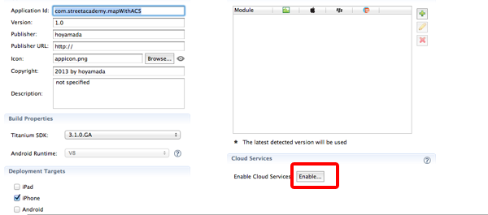
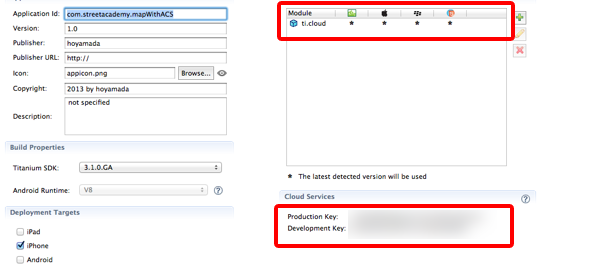
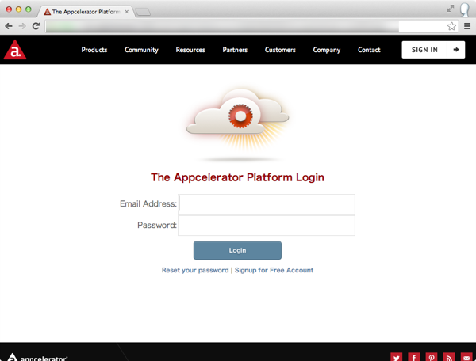
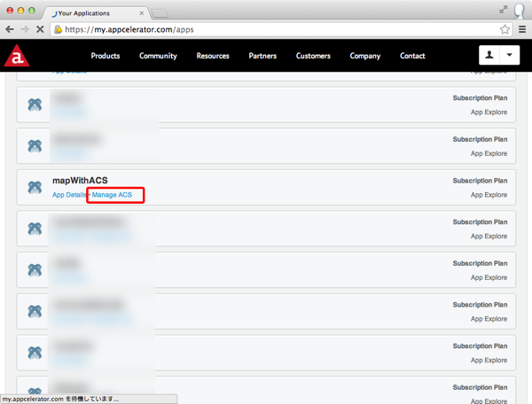
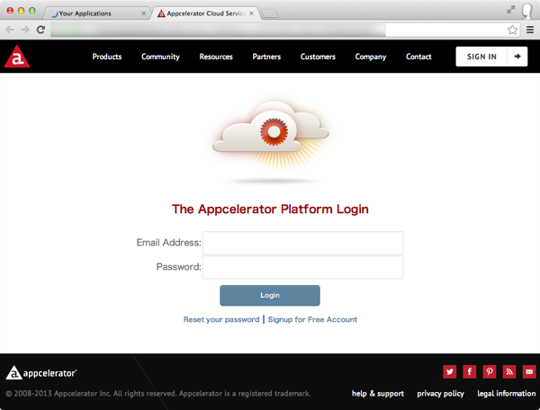
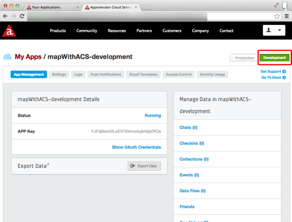
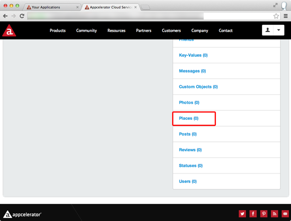

- About the author
- Questions and Issues
- Edit and Contribute
- Introduction
- 1) JavaScript基礎
- 2) Titanium Classic基礎
- 3) イベントリスナーについて学ぶ
- 4) TableViewの使い方について学ぶ
- 5) WebViewの使い方について学ぶ
- 6) HTTPClientの使い方を学ぶ
- 7) ACSと連携させた位置情報処理について学ぶ
- 8) Titanium Classic応用編
- 9) ソースコードの保守性をあげる工夫
- 10) TableViewを一工夫して利用する
- 11) モジュール化
- 12) CommonJSについて
- 13) Titanium Classic環境でも手軽に使えて開発効率があがるJavaScriptライブラリの紹介
ACSと連携させる
先ほど作ったアプリケーションでは、緯度、経度の情報を予め設定したものを画面に表示する機能を実装しました。
これだとあまり実用的なアプリケーションとはいえないため、サーバー上に配置した緯度、経度の情報を読み込んだ上で地図上に表示するアプリケーションに仕上げていきますがサーバーサイドのアプリケーションをゼロベースで開発するとなると敷居が高くなってしまうため、Titanium Mobileの開発元のAppceleratorが提供してるACSという便利なサービスを活用していきます。
ACSとは？
スマートフォン向けのアプリケーションを開発する場合にサーバーサイドのアプリケーションが必要になってきますが、その際に必要となりそうな機能というのは
- ユーザ登録・管理機能・FacebookやTwitter等のソーシャルアカウント連携
- データ共有
- 写真データのアップロード機能
- スマートフォンへのプッシュ通知機能
という形に集約されるケースが多くなるかと思います。
こういう機能を手軽に利用できるようサービスの概念を MBaaS （Mobile Backend as a Serviceの略でエムバースという読み方をします）というのものがあります。
Titanium Mobileの開発元のAppceleratorでは MBaaS の１つとしてACSというものを提供してます。
ACSを使うことで、サーバーサイドのアプリケーションを作りこむことなく手軽に位置情報の管理をすることが出来るようになります
ACSと連携したアプリケーション開発
実際にACSと連携したアプリケーション開発方法について説明します
開発前に行う必須作業
ACSと連携したアプリケーションを開発する場合に、アプリケーションに関する情報を管理してるtiapp.xmlの修正をする必要があります。
具体的には以下2つの作業が必要になります
- デフォルトでは無効になってるCloud Servicesを有効にする
- ti.cloudというモジュールを利用できるようにする
※ 1.のCloud Servicesを有効にすることで、自動的にti.cloudというモジュールを利用できるようになるはずです。
App Explorer 上で、tiapp.xmlをダブルクリックして、tiapp.xmlを開きます
以下のような画面が標示されるかと思います。
インターネット接続ができる状態であることを念のため確認した上で、Enable Cloud Servicesの項目のEnableボタンをクリックします

しばらくすると、Enableボタンの表示が切り替わり以下のようにProduction Keyとdevelopment Keyの２つが表示されればOKです

今回のサンプルアプリで利用するデータについて
東京タワーと都庁前の2つのサンプルデータを以下に記載しましたのでこちらを利用することにします
東京タワー
- 住所：東京都港区芝公園4-2-8
- 緯度：35.658704
- 経度：139.745408
都庁前
- 住所：東京都新宿区西新宿2-8-1
- 緯度：35.689185
- 経度：139.691648
なお、住所から緯度と経度の情報を調べる方法を参考資料にまとめていますので、今後独自にデータを登録したい場合には、参考資料の情報を参考にご自身で緯度経度を調べた上で登録してみて下さい
ACSの管理画面からデータ登録する
ACSの管理画面にアクセスして上記データを登録するため、Webブラウザを起動してACSの管理画面の以下URLにアクセスします
http://my.appcelerator.com/apps
以下のログイン画面が表示されるので、Titanium Studioを利用する際に利用してるログインIDとパスワードを入力します。

Titanium Mobileで開発してるアプリケーション名の一覧が表示されるので今回作ってるProjectの mapWithACS を探して、クリックします

再度ログインを促されるのでログインIDとパスワードを入力します。

以下のようにアプリケーションの管理画面が表示されます

アプリケーションの管理画面では
- テスト環境用のデータ:
- 本番環境用のデータ:
の２つを管理することが出来ます。Development ボタンをクリックすることでテスト環境用の設定に切り替わり、Productionボタンをクリックすることで本番環境用の設定に切り替わります。
AppStoreに公開することがないなら、Developmentボタンをクリックしてテスト環境を利用することをオススメします。今回もDevelopment ボタンをクリックしてテスト環境にデータ登録します
なお、Developmentボタンをクリックすると、Developmentボタンは白文字で緑色が下地になるのでその状態になってることを確認した上で、Places右側に並んでるメニューから Places をクリックします

Placesの管理画面が表示されたら、Create a place をクリックします

クリック後、以下のような画面が表示されます。

データ登録方法は、Googleローカルの情報を検索するやり方もありますが、位置情報によってはうまく見つからないこともあるので、マニュアル登録をする方法について説明します。Add Manuallyボタンをクリックすると、データ登録画面が表示されます
赤く囲った所は入力必須になってます。東京タワーの情報を例に順番に説明します
- Enter your business name: 場所の名前を入力するので、東京タワーと入力します
- Address:ここに住所を入力するため港区芝公園4-2-8と入力します
- City: 東京都と入力します
また、赤枠以外の所は任意ですが、緯度経度が入力されていないと、Titanium Mobileで開発するアプリから検索できなくなるため、以下のように入力します
- latitude：35.658704
- longitude：139.745408
入力が完了したら、Submitボタンをクリックしてデータ登録は完成です。
この要領で、残りのデータも登録します
ACSに登録したデータを検索して地図上にマーカーを表示する
ACSにデータを登録する手順を解説しましたが、そのデータを検索して地図上にマーカーを表示する昨日を実装します
ACS上のデータを検索する処理としては
- ACSを活用するモジュールを読み込む
- 1.で読み込んだモジュールの機能を活用してデータを検索する処理
に大別できます。
Titanium Mobileの標準のAPIで提供される以上のことを実現するために、開発元だけではなくサードパーティーの会社や、個人の開発者などが、ObjectiveC（Android向けの場合にはJava）で書かれたプログラムを読み込むことが出来ます。
このプログラムのことをネイティブモジュールと呼びます（ネット上では単にモジュールという言い方をしてるケースもあります）
ACSと連携するアプリケーションを作る場合には、Titanium Mobileの開発元のAppceleratorが提供してるモジュールを利用します
モジュール読み込み方法
モジュールを読み込む場合には
var module = require('モジュール名');
のように記述します。
Titanium Mobileの開発元のAppceleratorが提供するACS連携モジュールの場合には
var cloud = require('ti.cloud');
のように記述します。
ACSからデータを検索してその結果を地図上に表示する
先ほど作ったアプリではあらかじめ設定したデータを元にして、任意の場所にマーカーを表示する機能を実装しましたので、それを改造して、ACSからデータを検索してその結果を地図上に表示するアプリケーションを作ります
var mapWindow,mapView,marker;
mapWindow = Titanium.UI.createWindow({
title:'位置情報処理',
backgroundColor:'#fff'
});
mapView = Titanium.Map.createView({
mapType: Titanium.Map.STANDARD_TYPE,
region: {
latitude:35.676564,
longitude:139.765076,
latitudeDelta:0.025,
longitudeDelta:0.025
},
animate:true,
regionFit:true,
userLocation:true,
top:0,
left:0,
width:Ti.UI.FULL,
height:Ti.UI.FULL
});
var cloud = require("ti.cloud"); // (1)
cloud.Places.query({ // (2)
page:1, // (3)
per_page:20
},function(e){ // (4)
var data, i, place, result,marker;
if(e.success){
i = 0;
while(i < e.places.length){ // (5)
place = e.places[i];
marker = Titanium.Map.createAnnotation({
latitude: place.latitude,
longitude: place.longitude,
title: place.name,
animate: false,
leftButton: "",
rightButton:""
});
mapView.addAnnotation(marker);
i++; // (6)
}
} else {
Ti.API.info("Error:\n" + ((e.error && e.message) || JSON.stringify(e)));
}
});
mapWindow.add(mapView);
mapWindow.open();
- ACSを活用するために、モジュールを読み込みます。読み込んだ値を変数cloudに格納しており、これ以降cloud.xxx.xxx()という形でACS上にあるデータを検索したり、登録することが可能になります
- ACSに登録した時に places の項目の情報を検索する時には、Places.query()というメソッドを呼び出すことで実現できます。
- ACSのデータを検索するときに、Places.query()メソッドにオプションとなる値を設定することで細かい条件検索ができます。今回は件数が少ないですが例えば登録データが1000件あるような場合、per_pageの値を設定することで1検索あたりのデータ数を設定することができます。（今回のように20と指定すると1回あたり20件までしか取得できません）またページと言う概念があるため、最初に20件取得したあと21件目のデータを取得したい場合には、pageという項目に適切な値を設定することで次のデータを取得できます
- Places.query()メソッドで検索された結果は、コールバック関数に値が引き渡されます。ここの変数eの値を参照することで、検索の成功・失敗や実際のデータが参照できます
- Places.query()メソッドで検索された結果を順番に得るために、配列のe.placesの長さ分ループ処理をします
- ループのカウンターとして利用してる変数iの値に1つ増加させます